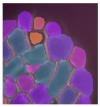

Logiciels¶
SynopsX¶
Image segmentation : Level Set Method¶
{kind=link}
Contact : Typhaine Moreau, Annamaria Kiss, Cerasela Calugaru
Objectif : Level Set Method : Optimization of Level Set Methods for biological image segmentation (LSM). An automatic way to segment grayscale 3D images of cells.
Image processing : Anisotropic Blur¶
Contact : Typhaine Moreau, Annamaria Kiss, Cerasela Calugaru
Objectif : Anisotropic Blur : PDE-based algorithm to reduce noise in grey-scale
image (2D or 3D) from biology, using a diffusion process.
Twist-DNA¶
Contact : Daniel Jost
Twist-DNA is a freely-available open source code that allows the computations of base-pair and bubble opening probabilities for any DNA sequences at a given temperature, a given superhelical stress and a given salt concentration.
AquaSol - Generalized Poisson-Boltzmann theory and simulation applied to DNA and the nucleosome¶
{kind=link}
Contact : Cerasela Calugaru, Ralf Everaers, Sam Meyer
Objectif : Optimisation (nouveaux algorithmes, parallélisation), implémentation des nouvelles fonctionnalités, analyse du comportement numérique et informatique du code AquaSol.
Logiciel de simulation 3D des phénomènes d’écoulement et de transport¶
Contact : Cerasela Calugaru
Le code SoFTP a été initialement développé pour simuler les phénomènes d’écoulement et de transport de masse en milieux poreux. Avec les derniers développements, il prends aussi en compte le transferts de chaleur et d’autres types de milieux (complètement fluide ou complètement solide).
Outil de simulation numérique en mécanique des fluides pour l’optimisation aérodynamique et aéroacoustique¶
Contact : Emmanuel Lévêque
Gaussian : portage sous compilateur Open Source¶
Contact : Emmanuel Quemener
Objectif : libérer Gaussian de l’exigence du compilateur PGI
Opérations : modifier le code source pour accepter la norme imposée par Gfortran
Documentation pour Debian Squeeze et Wheezy